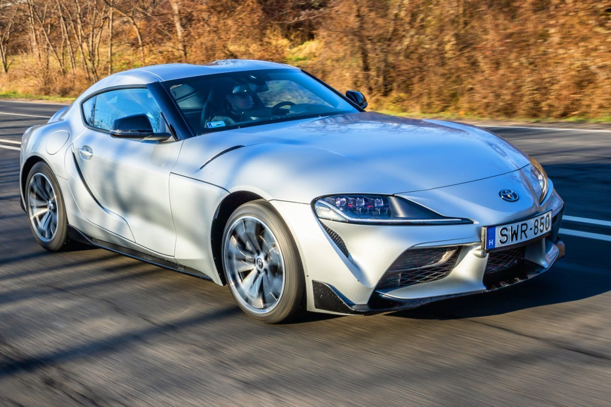

Legújabb hírek
Toyota Supra Gr (Mk5) 2019-óta gyárták az Mk4 utodja

Paul Walker Toyota Suprája a Halálos Irmaban című filmben jelenik meg. A film megjelénse után a csillagos egekbe ugrott az ára a kocsinak.
További hírek

Az Mk4 elődje azaz a MK3 látható. Amit 1986-tól gyártották japánban popupos headlightal.

Az autónak az interiorja magyarul a belseja látható.
Képek